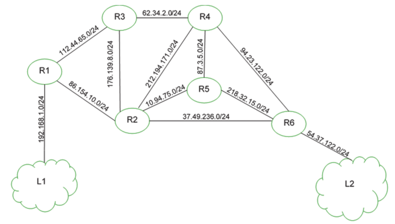
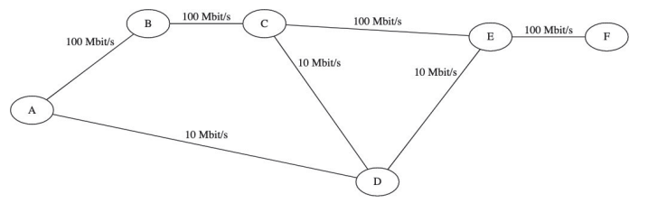

DS 25 01 22
| Devoir n°6 : Routage |
|---|
| Exercice n°1 | Exercice n°2 | |
|---|---|---|
| Barème | 8 pts | 4 pts |
Exercice n°1
Cet exercice porte sur les réseaux et les protocoles de routage.
On représente ci-dessous un réseau dans lequel R1, R2, R3, R4, R5 et R6 sont des routeurs. Le réseau local L1 est relié au routeur R1 et le réseau local L2 au routeur R6.

Rappels et notations
Dans cet exercice, les adresses IP sont composées de 4 octets, soit 32 bits. Elles sont notées X1.X2.X3.X4, où X1, X2, X3 et X4 sont les valeurs des 4 octets, convertis en notation décimale.
La notation X1.X2.X3.X4/n signifie que les n premiers bits de poids forts de l’adresse IP représentent la partie « réseau », les bits suivants représentent la partie « hôte ».
Toutes les adresses des hôtes connectés à un réseau local ont la même partie réseau et peuvent donc communiquer directement. L’adresse IP dont tous les bits de la partie « hôte » sont à 0 est appelée « adresse du réseau ».
On donne également des extraits de la table de routage des routeurs R1 à R5 dans le tableau suivant :
| Routeur | Réseau destinataire | Passerelle | Interface |
|---|---|---|---|
| R1 | 54.37.122.0/24 | 86.154.10.1 | 86.154.10.56 |
| R2 | 54.37.122.0/24 | 37.49.236.22 | 37.49.236.23 |
| R3 | 54.37.122.0/24 | 62.34.2.8 | 62.34.2.9 |
| R4 | 54.37.122.0/24 | 94.23.122.10 | 94.23.122.11 |
| R5 | 54.37.122.0/24 | 218.32.15.1 | 218.32.15.2 |
Question 1
Un paquet part du réseau local L1 à destination du réseau local L2.
a. En utilisant l’extrait de la table de routage de R1, vers quel routeur R1 envoie-t-il ce paquet : R2 ou R3 ? Justifier.
b. A l’aide des extraits de tables de routage ci-dessus, nommer les routeurs traversés par ce paquet, lorsqu’il va du réseau L1 au réseau L2.
Question 2
La liaison entre R1 et R2 est rompue.
a. Sachant que ce réseau utilise le protocole RIP (distance en nombre de sauts), donner l’un des deux chemins possibles que pourra suivre un paquet allant de L1 vers L2.
b. Dans les extraits de tables de routage ci-dessus, pour le chemin de la question 2.a, quelle(s) ligne(s) sera (seront) modifiée(s) ?
Question 3
On a rétabli la liaison entre R1 et R2.
Par ailleurs, pour tenir compte du débit des liaisons, on décide d’utiliser le protocole OSPF (distance liée au coût minimal des liaisons) pour effectuer le routage. Le coût des liaisons entre les routeurs est donné par le tableau suivant :
| Liaison | R1-R2 | R1-R3 | R2-R3 | R2-R4 | R2-R5 |
|---|---|---|---|---|---|
| Coût | 100 | 100 | ? | 1 | 10 |
| Liaison | R2-R6 | R3-R4 | R4-R5 | R4-R6 | R5-R6 |
|---|---|---|---|---|---|
| Coût | 10 | 10 | 1 | 10 | 1 |
a. Le coût \(C\) d'une liaison est donné ici par la formule ଽ
\(C=\dfrac{10^9}{BP}\)
où \(BP\) est la bande passante de la connexion en bps (bit par seconde).
Sachant que la bande passante de la liaison R2-R3 est de 10 Mbps, calculer le coût correspondant.
b. Déterminer le chemin parcouru par un paquet partant du réseau L1 et arrivant au réseau L2, en utilisant le protocole OSPF.
c. Indiquer pour quel(s) routeur(s) l’extrait de la table de routage sera modifié pour un paquet à destination de L2, avec la métrique OSPF.
Exercice n°2
On considère le réseau modélisé par le schéma ci-dessous.
Les routeurs sont identifiés par les lettres de A à F ; les débits des liaisons entre les routeurs
sont indiqués sur le schéma.

Question 1
Dans cette question, tous les routeurs utilisent le protocole RIP (distance en nombre de sauts).
On s'intéresse aux routes utilisées pour rejoindre F une fois les tables stabilisées.
Recopier et compléter sur la copie la table suivante :

Question 2
Dans cette question tous les routeurs utilisent le protocole OSPF (distance en coût des routes). Le coût d'une liaison est modélisé par la formule \(\dfrac{10^8}{d}\) où ݀\(d\) est le débit de cette liaison exprimé en bit par seconde.
On s’intéresse aux routes utilisées pour rejoindre F une fois les tables stabilisées.
Recopier et compléter sur la copie la table suivante :
Question3
Des protocoles RIP et OSPF, lequel fournit le routage entre A et F le plus performant en terme de débit ? Justifier la réponse.